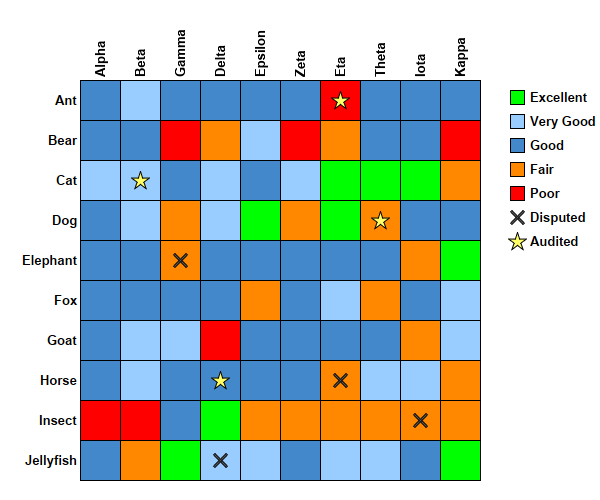

This example demonstrates adding symbols and custom legend keys to the discrete heat map.
The following is the command line version of the code in "cppdemo/heatmapcellsymbols". The MFC version of the code is in "mfcdemo/mfcdemo". The Qt Widgets version of the code is in "qtdemo/qtdemo". The QML/Qt Quick version of the code is in "qmldemo/qmldemo".
#include "chartdir.h"
int main(int argc, char *argv[])
{
// The x-axis and y-axis labels
const char* xLabels[] = {"Alpha", "Beta", "Gamma", "Delta", "Epsilon", "Zeta", "Eta", "Theta",
"Iota", "Kappa"};
const int xLabels_size = (int)(sizeof(xLabels)/sizeof(*xLabels));
const char* yLabels[] = {"Ant", "Bear", "Cat", "Dog", "Elephant", "Fox", "Goat", "Horse",
"Insect", "Jellyfish"};
const int yLabels_size = (int)(sizeof(yLabels)/sizeof(*yLabels));
// Random data for the 10 x 10 cells
RanSeries* rand = new RanSeries(2);
DoubleArray zData = rand->getSeries(xLabels_size * yLabels_size, 0, 10);
// The coordinates for the first set of scatter symbols
double symbolX[] = {2.5, 6.5, 3.5, 8.5};
const int symbolX_size = (int)(sizeof(symbolX)/sizeof(*symbolX));
double symbolY[] = {4.5, 7.5, 9.5, 8.5};
const int symbolY_size = (int)(sizeof(symbolY)/sizeof(*symbolY));
// The coordinates for the second set of scatter symbols
double symbol2X[] = {6.5, 3.5, 7.5, 1.5};
const int symbol2X_size = (int)(sizeof(symbol2X)/sizeof(*symbol2X));
double symbol2Y[] = {0.5, 7.5, 3.5, 2.5};
const int symbol2Y_size = (int)(sizeof(symbol2Y)/sizeof(*symbol2Y));
// Create an XYChart object of size 600 x 500 pixels.
XYChart* c = new XYChart(600, 500);
// Set the plotarea at (80, 80) and of size 400 x 400 pixels. Set the background, border, and
// grid lines to transparent.
PlotArea* p = c->setPlotArea(80, 80, 400, 400, -1, -1, Chart::Transparent, Chart::Transparent);
// Add the first set of scatter symbols. Use grey (0x555555) cross shape symbols.
c->addScatterLayer(DoubleArray(symbolX, symbolX_size), DoubleArray(symbolY, symbolY_size),
"Disputed", Chart::Cross2Shape(0.2), 15, 0x555555);
// Add the first set of scatter symbols. Use yellow (0xffff66) star shape symbols.
c->addScatterLayer(DoubleArray(symbol2X, symbol2X_size), DoubleArray(symbol2Y, symbol2Y_size),
"Audited", Chart::StarShape(5), 19, 0xffff66);
// Create a discrete heat map with 10 x 10 cells
DiscreteHeatMapLayer* layer = c->addDiscreteHeatMapLayer(zData, xLabels_size);
// Set the x-axis labels. Use 10pt Arial Bold font rotated by 90 degrees. Set axis stem to
// transparent, so only the labels are visible. Set 0.5 offset to position the labels in between
// the grid lines. Position the x-axis at the top of the chart.
c->xAxis()->setLabels(StringArray(xLabels, xLabels_size));
c->xAxis()->setLabelStyle("Arial Bold", 10, Chart::TextColor, 90);
c->xAxis()->setColors(Chart::Transparent, Chart::TextColor);
c->xAxis()->setLabelOffset(0.5);
c->setXAxisOnTop();
// Set the y-axis labels. Use 10pt Arial Bold font. Set axis stem to transparent, so only the
// labels are visible. Set 0.5 offset to position the labels in between the grid lines. Reverse
// the y-axis so that the labels are flowing top-down instead of bottom-up.
c->yAxis()->setLabels(StringArray(yLabels, yLabels_size));
c->yAxis()->setLabelStyle("Arial Bold", 10);
c->yAxis()->setColors(Chart::Transparent, Chart::TextColor);
c->yAxis()->setLabelOffset(0.5);
c->yAxis()->setReverse();
// Set the color stops and scale
double colorScale[] = {0, 0xff0000, 1, 0xff8800, 3, 0x4488cc, 7, 0x99ccff, 9, 0x00ff00, 10};
const int colorScale_size = (int)(sizeof(colorScale)/sizeof(*colorScale));
const char* colorLabels[] = {"Poor", "Fair", "Good", "Very Good", "Excellent"};
const int colorLabels_size = (int)(sizeof(colorLabels)/sizeof(*colorLabels));
layer->colorAxis()->setColorScale(DoubleArray(colorScale, colorScale_size));
// Position the legend box 20 pixels to the right of the plot area. Use 10pt Arial Bold font.
// Set the key icon size to 15 x 15 pixels. Set vertical key spacing to 8 pixels.
LegendBox* b = c->addLegend(p->getRightX() + 20, p->getTopY(), true, "Arial Bold", 10);
b->setBackground(Chart::Transparent, Chart::Transparent);
b->setKeySize(15, 15);
b->setKeySpacing(0, 8);
// Add the color scale label to the legend box
for(int i = colorLabels_size - 1; i >= 0; --i) {
b->addKey(colorLabels[i], (int)(colorScale[i * 2 + 1]));
}
// Output the chart
c->makeChart("heatmapcellsymbols.png");
//free up resources
delete rand;
delete c;
return 0;
}
© 2023 Advanced Software Engineering Limited. All rights reserved.